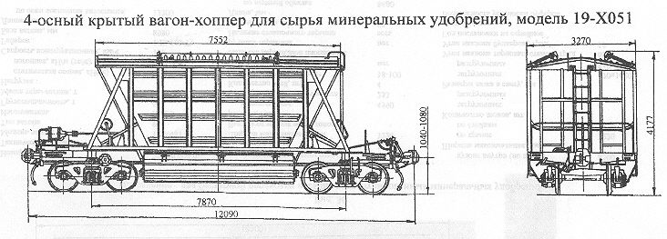

Назначение: для бестарной перевозки насыпных гранулированных минеральных удобрений
Параметры
| Номер проекта | 738.00.000-0 |
| Технические условия | |
| Модель вагона | 19-Х051 |
| Тип вагона | 902 |
| Изготовитель | КрВЗ |
| Грузоподъемность, т | 64 |
| Масса тары вагона, т | 20 |
| Нагрузка: статическая осевая, кН(тс) |
205,8(21) |
| погонная, кН/м(тс/м) | 68,11(6,95) |
| Скорость конструкционная, км/ч | 120 |
| Габарит | 1-Т |
| База вагона, мм | 7870 |
| Длина, мм: по осям сцепления автосцепок |
12090 |
| по концевым балкам рамы (длина рамы) | 10870 |
| Ширина максимальная, мм: | 3270 |
| Высота от уровня верха головок рельсов, мм максимальная |
4177 |
| до разгрузочных устройств | 286 |
| Количество осей, шт. | 4 |
| Модель 2-осной тележки | 18-100 |
| Наличие переходной площадки | есть |
| Наличие переходной площадки с ручным тормозом | нет |
| Наличие стояночного тормоза | есть |
| Объем кузова, м³ | 57 |
| Длина,мм: по верхней обвязке |
7552 |
| кузова внутри (по верху) | 7352 |
| Ширина максимальная,мм: по крыше |
3270 |
| по стойкам | 3238 |
| Количество люков,шт.: загрузочных |
2 |
| разгрузочных | 2 |
| Размеры люка в свету, мм: загрузочных |
3620х700 |
| разгрузочных | 4500х800 |
| Угол наклона торцовых стенок, град | 55 |
| Угол наклона бункеров, град | 47 |
| Год постановки на серийное производство | 1972 |
| Возможность установки буферов | нет |